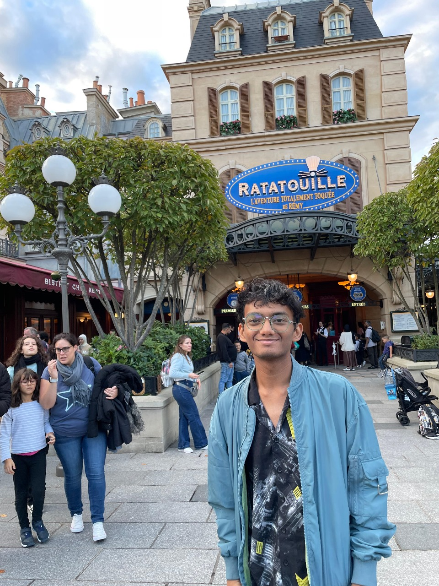

ChEABLOGS
Prashast Chitravanshi | Piramal Pharma Limited
I am Prashast Chitravanshi, a fourthie from the Chemical Engineering department. I currently live in Ahmedabad but have lived in a variety of places before. I love watching movies and listening to music. I interned at Piramal Pharma Ltd in their Ahmedabad PPDS Plant. Before this, I have done a bunch of projects in chemical engineering as well as other fields.
Q:What was your motivation for the internship and what was the recruitment process like?
My main motivation was to attain the experience of working in a core company so that I could spend my summer break doing something useful. I chose Piramal because I believe that one should do the best with the opportunities that they are presented with, and Piramal seemed like an amazing company to work in. The recruitment process for Piramal involved three different rounds. They released a test shortlist after the IAF was submitted. It was an aptitude test which consisted of logical reasoning, english and core chemical questions. The first two parts of it were easy, but the chemical part required some effort. This was because they even asked questions from concepts that had not been taught in class. It was still easy to clear this test and more than half the people shortlisted made it to the second round. The second round was group discussion. They divided people into groups of 8 or 9. There were two HRs sitting who observed the GD. It lasted for a total of 20 minutes, such that 10 minutes were given to 2 different topics. These topics were very random and abstract and were largely unrelated to chemical. Only about 15 people made it to the interview round. The interview was divided into two parts- technical and HR. Each lasted for around 20-30 minutes. The questions in technical were quite technical core related with an emphasis on pharmaceuticals (I wonder why). The questions in HR were more personal and even slightly unhinged. To prepare for this, I did a mock GD with my friends which helped boost my confidence. It was important for one to go through the projects on their resume because the technical round of the interview was mostly based on this. I spoke to seniors who bagged this intern in the previous year, and their insights were super helpful to me. My friends were also EXTREMELY helpful, unke bina nhi ho paata:)
Q: Can you explain your role in the internship? What jobs were you expected to perform and what projects were you involved with?
My role in the internship was R&D based. The main goal was to conduct a QbD based optimization for particle size reduction using a milling equipment. It involved lots of literature review, lab work, and statistical interpretations of the results obtained. I had to design experiments to determine which factors were the most optimal for particle size reduction of an API.
Q: What were the most exciting aspects of the internship? What were the most challenging aspects?
The most exciting aspect was the scope of learning how projects are run in a corporate setting. I was introduced to many new concepts and practices which I believe will be quite useful for me in my future roles. A challenging aspect of the internship was that I was the only person with a chemical engineering background in an office full of people with pharmaceutical degrees! I had to learn a lot of pharmaceutical concepts in a short span of time so that I could understand what exactly was happening in the office. The most challenging aspect of the internship was Gujarati food.
Q: What was the culture like in your office? How did the company treat the interns and what were you provided with?
The work culture in my office was pretty good. The working hours were from 8-5, and only 5 days in the week and most importantly, phones were allowed. This was comparatively much chiller than the other co-interns who had 6 day work weeks in plants where phones were not allowed. The environment and the people were very helpful. I used to approach people randomly for help in understanding things and they always helped me readily.
Q: What were your key learnings from the internship?
I would like to tell the juniors that this specific period can be really unpredictable and uncertain. Things will be seemingly impossible, but that is the essence of the intern season! Try not to think too much about the results, and focus more on giving your best (even the Bhagwad Gita says this) There will be many many opportunities coming your way, things can take time so don't worry too much about it.
I would like to tell the juniors that this specific period can be really unpredictable and uncertain. Things will be seemingly impossible, but that is the essence of the intern season! Try not to think too much about the results, and focus more on giving your best (even the Bhagwad Gita says this) There will be many many opportunities coming your way, things can take time so don't worry too much about it.
Contact Details : 9893055992